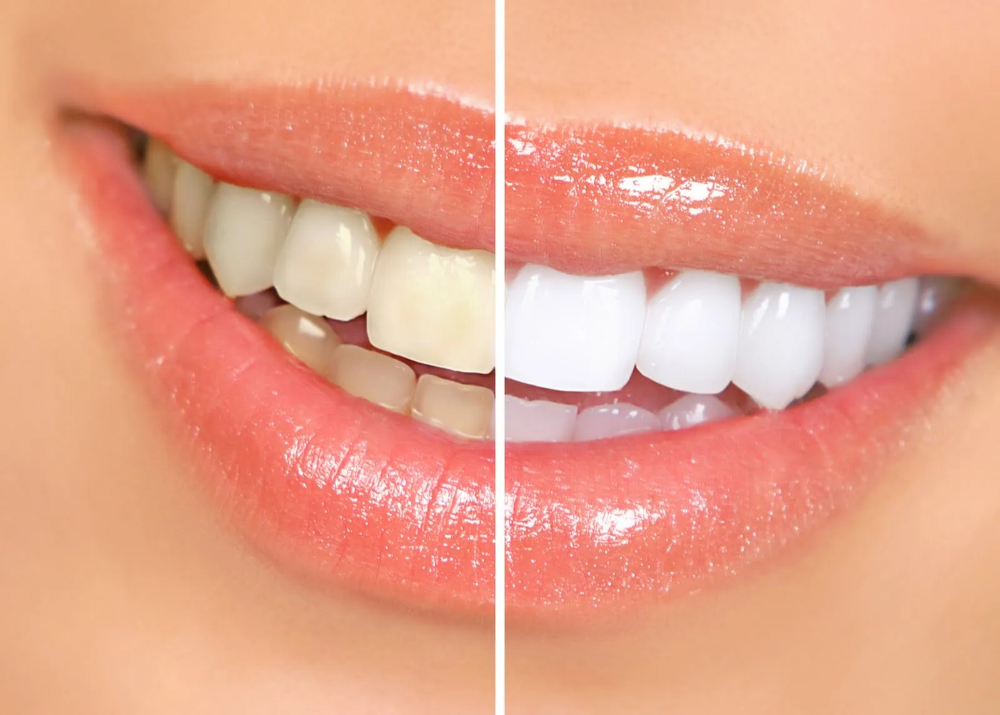
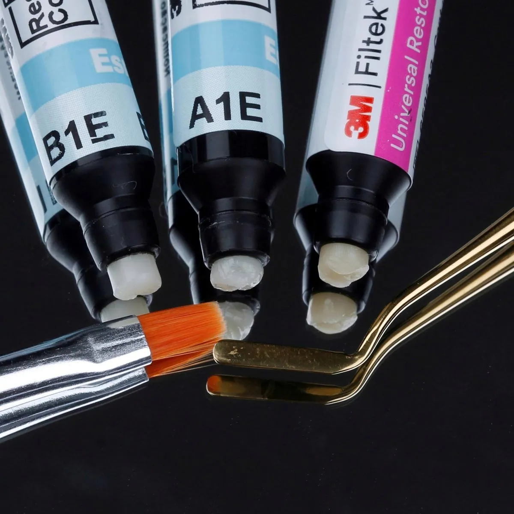
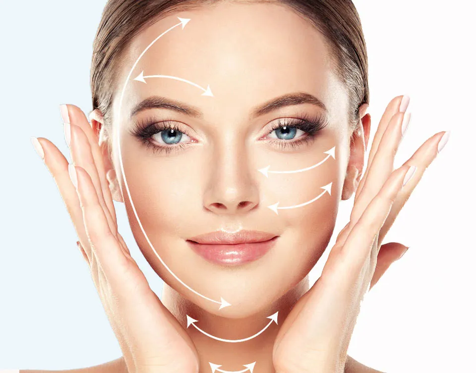

Tratamentos
Comece pelo que você está sentindo
Organizamos os tratamentos pelas necessidades mais comuns de quem chega à clínica. Se não encontrar o seu caso, a avaliação resolve: o dentista examina e indica o melhor caminho.
Quero um sorriso mais bonito
Cor, forma e proporção dos dentes, com planejamento individual.

Lentes de contato dental
Laminados cerâmicos ultrafinos para corrigir cor, forma e proporção dos dentes.
Conhecer o tratamento
Clareamento dental
Dentes mais claros com segurança, em casa ou no consultório.
Conhecer o tratamento
Facetas em resina
Correção de forma e cor feita direto no dente, muitas vezes sem preparo.
Conhecer o tratamento
Harmonização orofacial
Equilíbrio entre sorriso e face, valorizando os seus traços.
Conhecer o tratamentoPerdi um ou mais dentes
Soluções fixas para voltar a mastigar e sorrir com segurança.
Meus dentes estão tortos
Alinhadores transparentes e aparelhos modernos, para adultos e jovens.


Estou com dor de dente
Diagnóstico e tratamento para aliviar a dor e preservar o dente natural sempre que possível.
Limpeza, gengiva e sensibilidade
Limpeza com Airflow, com foco no conforto, e cuidado especializado da gengiva.
Tenho medo de dentista
Atendimento sem pressa e sedação consciente para você ficar tranquilo.
Ronco ou ranjo os dentes à noite
Placas sob medida para ronco, apneia e bruxismo, cada uma com indicação própria.

É para o meu filho
Odontopediatria com brinquedoteca, do bebê ao adolescente.
Todos os tratamentos
Lista em ordem alfabética.
Primeira consulta
Solicite seu agendamento
Envie sua solicitação pelo site a qualquer hora ou fale com a recepção pelo WhatsApp. O horário é confirmado pela recepção.
- EndereçoRua Canudos, 129
Jardim Higienópolis · Londrina – PR - HorárioSegunda a sexta: 8h às 12h · 13h30 às 18h
Sábado: 8h às 12h - Telefone(43) 3027-5101
- ConvêniosAtendimento particular, com orçamento claro